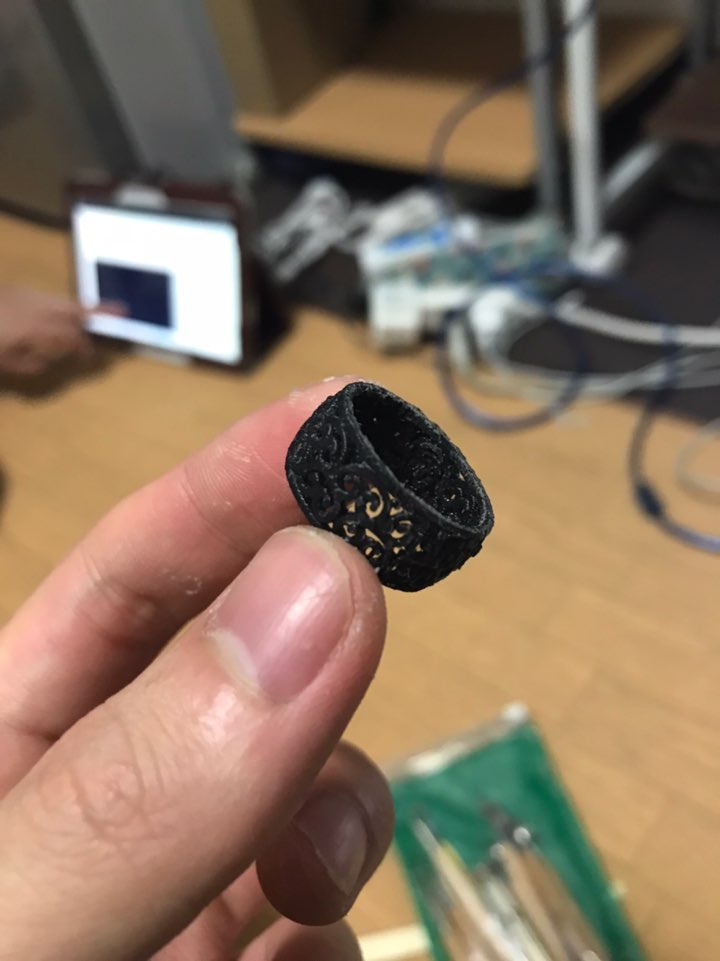

3D Printing
UltimakerCuraというプログラムをインストルして、S31の3Dプリンターの機種を検索して設定する。
ダウンロードしたSTLファイルを開いて真ん中に配置。SLICEボタンを押して時間を確認後、SDカードにデータを入れる。
入れたデータのSDカードをプリンターに入れてプリント開始。
最初にベッドがちゃんと水平なのか確認してノズルとベッドとの距離を調整する。
Tip:名刺みたいな厚さの紙を挟んでみるとわかりやすい。
プリントできた結果物。
この後、ヤスリをしながら後加工を行う。
使ってみてもっと色々やってみたいと思い、３Dプリンターを購入した。
機種はGEEETECHという会社のA10M。
最初買った時にはCURAにこのプリンターの自動設定がなくて自分で情報を入れながら設定したが、
最近、CURAに追加されて便利になった。
